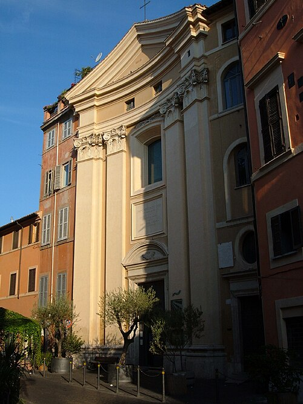
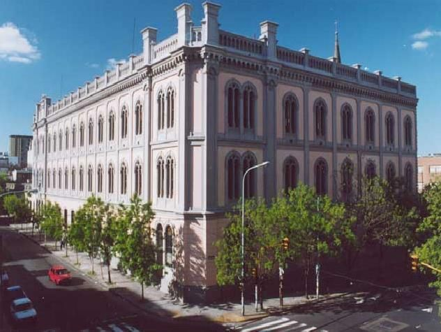

San José de Calasanz defendió que la educación debía estar al alcance de todos,
especialmente de los niños con menos oportunidades. Su obra continúa viva más de
cuatro siglos después.
San José de Calasanz, fundador de las Escuelas Pías.
Presentación
¿Quién fue San José de Calasanz?
San José de Calasanz fue un sacerdote, educador y santo español que dedicó gran parte
de su vida a la educación cristiana de los niños y jóvenes, especialmente de aquellos
que vivían en condiciones de pobreza. Es reconocido como fundador de las Escuelas Pías
y como uno de los principales impulsores de la educación popular y gratuita en Europa.
Dentro de la Iglesia católica, su condición es la de sacerdote, religioso, fundador y
santo. Dentro de la historia de las Escuelas Pías, es la figura principal, ya que inició
su obra educativa y fundó la orden religiosa de los Padres Escolapios.
Datos principales
Ficha general
Información general sobre San José de Calasanz
Nombre completo
José de Calasanz y Gastón
Nacimiento
1557, Peralta de la Sal, Aragón, España
Fallecimiento
25 de agosto de 1648, Roma
Condición eclesial
Sacerdote, religioso, fundador y santo
Obra principal
Escuelas Pías y Orden de los Padres Escolapios
Lema educativo
Piedad y Letras
Reconocimiento
Patrono de las escuelas populares cristianas desde 1948
Biografía
Su vida
Infancia y formación
José de Calasanz y Gastón nació en 1557 en Peralta de la Sal, una localidad de
Aragón, España. Creció en una familia cristiana y recibió una amplia formación
cultural y religiosa. Desde joven sintió la vocación sacerdotal y, después de
completar sus estudios, fue ordenado sacerdote.
Sus primeros años como sacerdote
Durante sus primeros años de ministerio desempeñó diferentes funciones pastorales
y administrativas en varias diócesis españolas. En 1592 viajó a Roma pensando que
su permanencia allí sería temporal. Sin embargo, el contacto con la realidad de la
ciudad produjo un cambio decisivo en su vida.
El encuentro con una realidad diferente
Mientras recorría los barrios más pobres de Roma, especialmente el Trastevere,
observó que muchos niños vivían en las calles y no tenían acceso a la educación.
En aquella época, estudiar era una posibilidad reservada principalmente para las
familias que podían pagar maestros o instituciones educativas.
Calasanz comprendió que esos niños necesitaban, además de ayuda material,
conocimientos, valores y herramientas para construir un futuro diferente.
La escuela de Santa Dorotea
En 1597 comenzó a colaborar con una pequeña escuela ubicada en la parroquia de
Santa Dorotea, en el Trastevere. A partir de esa experiencia desarrolló la que la
Orden de las Escuelas Pías considera la primera escuela popular y gratuita de
Europa.
Calasanz abandonó sus aspiraciones personales y dedicó definitivamente su vida a
la educación de los niños pobres.

En Santa Dorotea comenzó la obra educativa que dio origen a las Escuelas Pías.
Educación para todos
Su obra educativa
La obra más importante de San José de Calasanz fue la creación de las Escuelas Pías.
Su objetivo era ofrecer una educación gratuita, integral y cristiana, dando prioridad
a los niños y jóvenes que no tenían posibilidades de estudiar.
Su propuesta otorgaba especial importancia a la educación desde los primeros años de
vida, porque consideraba que una buena formación durante la infancia podía orientar
positivamente el futuro de una persona. También defendió el respeto por la personalidad
y la dignidad de cada niño.
En sus escuelas se enseñaban conocimientos religiosos, lectura, escritura, matemáticas,
ciencias y humanidades. Calasanz mantuvo contacto con Galileo Galilei y valoró
especialmente el estudio de las matemáticas y de las ciencias. Esto muestra que su
modelo buscaba integrar la fe con el conocimiento y la cultura.
Piedad y Letras
Calasanz resumió su propuesta educativa mediante el lema
“Piedad y Letras”. Su intención no era enseñar únicamente contenidos
escolares, sino formar integralmente a cada estudiante.
Piedad
Representa la fe, los valores, la espiritualidad y la formación de la
persona.
Letras
Representa los conocimientos, la cultura, las ciencias y la preparación
intelectual.
Fundación de las Escuelas Pías
Para garantizar la continuidad de su obra, Calasanz reunió una comunidad estable
de religiosos y educadores. En 1617, la Iglesia reconoció al grupo como congregación.
En 1622, las Escuelas Pías quedaron constituidas como orden religiosa dedicada
especialmente a la educación de la infancia y la juventud.
Sus integrantes, conocidos como escolapios, asumieron los votos de pobreza, castidad
y obediencia, junto con un cuarto voto de dedicación a la educación.
Momentos fundamentales
Cronología principal
Nace en Peralta de la Sal, Aragón.
Viaja a Roma, donde conoce la realidad de los niños pobres.
Inicia la escuela popular y gratuita en Santa Dorotea, Trastevere.
La Iglesia aprueba la comunidad como congregación.
Se redactan y aprueban las Constituciones de Calasanz.
Las Escuelas Pías quedan constituidas como orden religiosa.
La Orden es reducida jurídicamente debido a conflictos internos y externos.
Calasanz muere en Roma manteniendo su confianza en la continuidad de la obra.
Es canonizado por el papa Clemente XIII.
El papa Pío XII lo proclama patrono de las escuelas populares cristianas.
Perseverancia
Dificultades atravesadas
El proyecto de Calasanz debió superar numerosos problemas. Las escuelas crecían
rápidamente, pero sus recursos económicos eran limitados. También existían dificultades
para conseguir docentes preparados y comprometidos de manera permanente.
Además, la educación de los pobres generaba oposición en algunos sectores de la
sociedad. La obra atravesó conflictos internos y cuestionamientos de autoridades
eclesiásticas. Finalmente, en 1646, la Orden de las Escuelas Pías fue reducida
jurídicamente a una congregación sin votos.
Calasanz recibió esta decisión durante los últimos años de su vida. Aunque parecía que
su obra podía desaparecer, mantuvo la confianza en que las Escuelas Pías continuarían.
Murió en Roma el 25 de agosto de 1648. Con el tiempo, la comunidad recuperó su
reconocimiento y la misión escolapia continuó extendiéndose.
Valores convertidos en acciones
Su testimonio
El testimonio de San José de Calasanz se manifestó principalmente a través de sus
decisiones y acciones. Al conocer la situación de los niños pobres de Roma, no
permaneció indiferente, sino que decidió transformar esa realidad mediante la educación.
Compromiso
Renunció a una vida más cómoda para dedicarse a la educación.
Preferencia por los pobres
Puso en el centro a quienes estaban excluidos de la enseñanza.
Perseverancia
Continuó defendiendo su proyecto durante sus mayores dificultades.
Servicio
Entendió la educación como una misión y no como una forma de obtener prestigio.
Respeto por los niños
Reconoció la dignidad y las capacidades de cada estudiante.
Integración
Unió la fe, la ciencia, la cultura y la formación humana.
Su perseverancia durante la crisis de las Escuelas Pías constituye una parte fundamental
de su testimonio. Aunque murió sin observar la recuperación completa de la Orden,
mantuvo la esperanza de que el proyecto sobreviviría.
Una misión que continúa
Su legado
El legado de San José de Calasanz continúa presente en las instituciones y comunidades
escolapias. Su aporte no consistió solamente en fundar una escuela o una orden religiosa,
sino en defender una nueva manera de comprender la educación.
Para Calasanz, la enseñanza no debía ser un privilegio reservado a quienes poseían
dinero. Todos los niños merecían la oportunidad de aprender, crecer y prepararse para
el futuro. De esta manera, convirtió la educación en una forma de servicio y en una
herramienta de transformación personal y social.
Su legado puede reconocerse en la prioridad concedida a la infancia, la atención a las
personas más vulnerables, la formación integral, el valor de los docentes y la unión
entre fe y cultura. El lema “Piedad y Letras” continúa expresando la
misión de educar tanto la inteligencia como la dimensión humana y espiritual.
Actualmente, las Escuelas Pías continúan desarrollando su misión educativa en diferentes
partes del mundo. Cada colegio escolapio que busca formar a niños y jóvenes mediante los
conocimientos, los valores y la fe mantiene viva una parte del proyecto iniciado por
Calasanz en Roma.

La misión educativa de Calasanz continúa actualmente en las instituciones escolapias.
Para conocer más
Recursos audiovisuales y visuales
Estos recursos permiten recorrer la historia de San José de Calasanz mediante un
video, un mapa y materiales digitales de las Escuelas Pías.
La historia de Calasanz y las Escuelas Pías
Seleccioná la imagen para ver el video sobre la historia de Calasanz y las
Escuelas Pías.
En la parroquia de Santa Dorotea, ubicada en el barrio romano del Trastevere,
comenzó en 1597 la experiencia educativa que dio origen a las Escuelas Pías.
San José de Calasanz no fundó solamente una institución educativa. Su mayor aporte fue
reconocer que todos los niños, especialmente los más pobres, tenían derecho a recibir
una educación completa y de calidad.
Su vida demuestra que la educación puede convertirse en una forma concreta de servicio,
inclusión y transformación. Por ese motivo, su pensamiento y su obra continúan siendo
relevantes más de cuatro siglos después.
Sobre esta página
Del trabajo de investigación a la web
Esta página forma parte del proyecto Rostros de la Santidad Escolapia.
La investigación fue organizada en componentes breves y visuales para facilitar su
lectura y su presentación mediante HTML y CSS.
Transformación de la investigación en contenido web